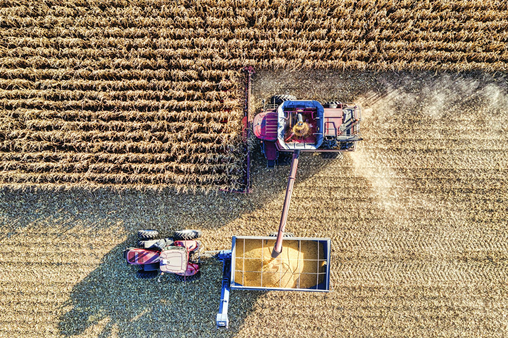

Alrededor de 600 asistentes reunió el VII Congreso Internacional de Mango y Palto, realizado este 23 y 24 de Agosto en el Complejo Turístico Huancamuña, Casma, Ancash. Este evento es organizado por la Asociación de Agricultores de Casma.
Este 8 y 9 de Agosto se realizó la 1° Conferencia Red Agrícola y AgtechLatam 2018, en el hotel Costa del Sol, Trujillo, Perú. Este importante evento reúne a grandes expertos en temas de agricultura, tales como producción de frutas y hortalizas, nutrición vegetal, riego, Fito...
Medida permitirá otorgar un incentivo al pequeño productor agrario para acceder a créditos del Banco Agropecuario (Agrobanco). El Ministerio de Desarrollo Agrario y Riego (Midagri) informó que el Ejecutivo aprobó transferir S/ 100 millones al Fondo para la Inclusión Financiera del Pequeño Productor Agropecuario (FIFPPA) con...
Entre los planes está expandir su producción a China. Para tal fin está adquiriendo granjas y comenzará a plantar a fines de este año o en primer trimestre de 2024. En un contexto de reducción de volúmenes de los arándanos peruanos impactados por factores climáticos, el...

La potencialidad de las exportaciones de arroz nacional a Colombia se estima en alrededor de US$ 70 millones anuales y con un volumen promedio de 100 mil toneladas, montos que podrían alcanzarse como parte del levantamiento de las restricciones del gobierno de Colombia en la...
La temporada 2023-2024 de jengibre promete una recuperación en la producción, luego de que el volumen cayera un 60% pese a la alta demanda de mercados extranjeros. Agroexportaciones Llacta reporta ingreso a nuevos competidores a este cultivo. Si bien la actual oferta de kion sigue siendo...
La Unidad Ejecutora Fondo Sierra Azul (UEFSA) del MIDAGRI en el marco del Plan Con Punche Perú, inició la ejecución de 84 núcleos ejecutores (NE), lo que representa un 88.4 % del total de 95 NE (que comprenden: 645 qochas y 570 kilómetros de zanjas...
Los factores que impactaron en el comportamiento negativo fueron el fenómeno de El Niño, la crisis política y no tener un marco jurídico que promueva esa actividad económica, indicó Adex. Las agroexportaciones peruanas registraron más de US$ 7,503 millones entre enero y octubre, una caída de...